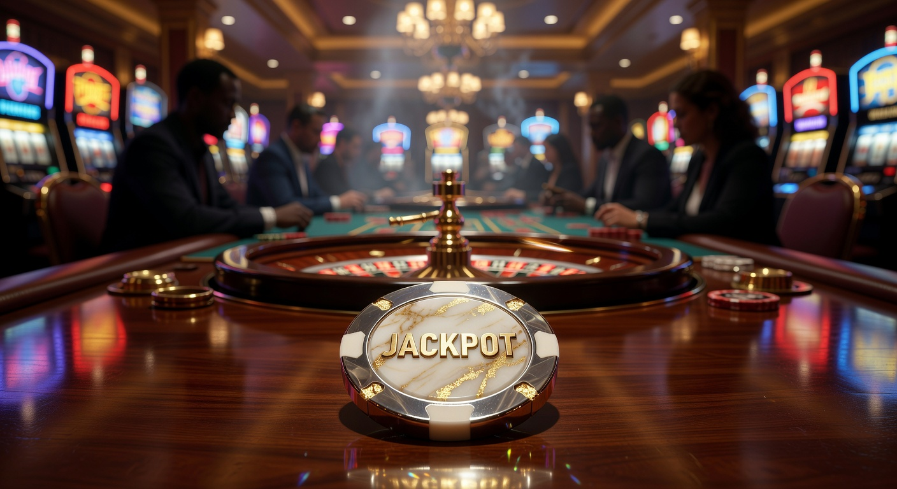
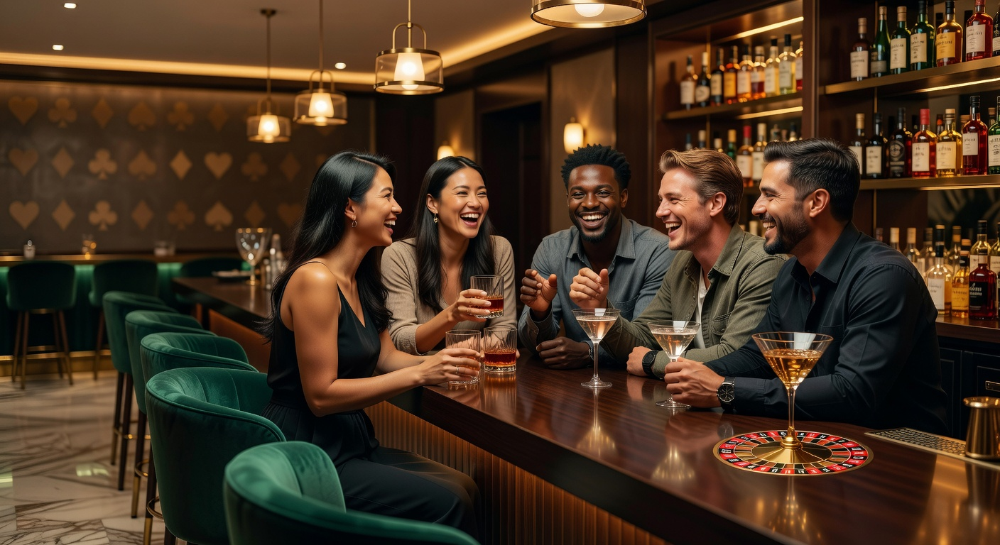
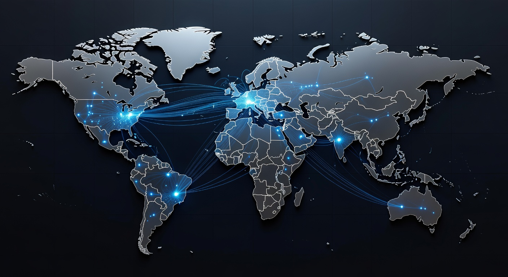
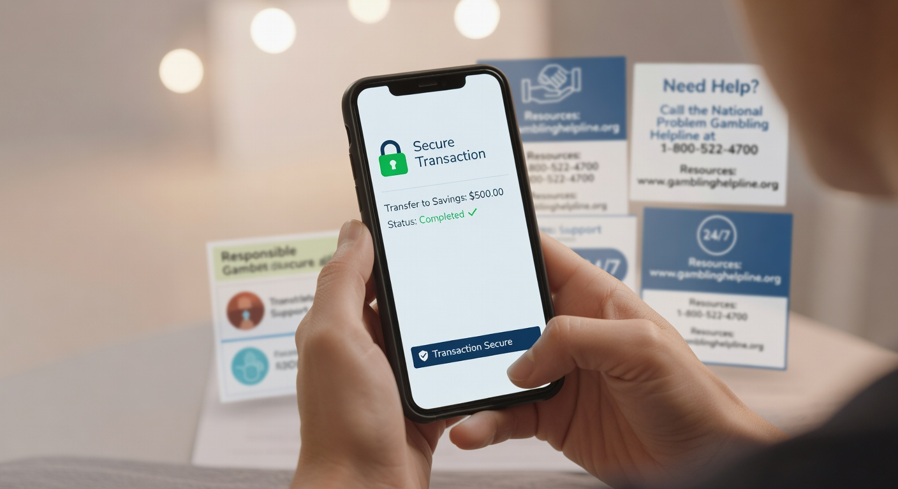

Gokken zonder Cruks: De complete gids voor Nederlandse spelers
Sinds de introductie van de Wet Kansspelen op Afstand in 2021 is het Nederlandse goklandschap drastisch veranderd. Nu we in 2026 zijn aanbeland, zien we dat de markt volwassen is geworden, maar ook dat veel ervaren spelers op zoek zijn naar alternatieven. Het fenomeen gokken zonder cruks is populairder dan ooit onder liefhebbers die meer flexibiliteit en minder strenge beperkingen wensen dan het nationale register oplegt.
In dit artikel duiken we diep in de wereld van internationale casino's die niet zijn aangesloten bij het Centraal Register Uitsluiting Kansspelen. We bespreken de voor- en nadelen, de veiligheid van buitenlandse licenties en waar je op moet letten als je de voorkeur geeft aan een speelomgeving met ruimere limieten en diverse bonusstructuren.
Wat betekent gokken zonder Cruks precies?
Wanneer we spreken over deze vorm van online entertainment, hebben we het over spelen bij aanbieders die geen Nederlandse licentie van de Kansspelautoriteit (Ksa) bezitten. Deze casino's zijn daardoor niet verbonden met het centraal register uitsluiting dat in Nederland verplicht is voor alle legale aanbieders. Dit betekent dat spelers die in het register staan, nog steeds toegang hebben tot deze internationale platformen.
Cruks is een systeem bedoeld om spelers te beschermen tegen gokverslaving, maar in 2026 merken we dat ook recreatieve spelers zich vaak beperkt voelen door de strenge monitoring. Door te kiezen voor gokken zonder cruks, stap je buiten de directe invloedssfeer van de Nederlandse toezichthouder. Je speelt dan bij online casino sites die gevestigd zijn in landen zoals Malta of Curaçao.
Voordelen casino Zonder Cruks

Er zijn verschillende redenen waarom spelers de voorkeur geven aan internationale platformen boven de lokale markt. Een van de grootste voordelen is de afwezigheid van de verplichte speelpauzes en de strikte verificatieprocessen die in Nederland gelden. Voor veel spelers die op zoek zijn naar een ongestoorde ervaring, bieden deze sites een uitkomst.
- Toegang tot een breder scala aan softwareleveranciers en exclusieve spellen.
- Minder strenge limieten op stortingen en inzetten per ronde.
- Anoniemer spelen zonder koppeling aan je burgerservicenummer (BSN).
- De mogelijkheid om te profiteren van een royale welkomstbonus zonder strenge bonusrestricties.
Bovendien bieden veel van deze platformen een online casino zonder registratie ervaring aan, waarbij je direct kunt storten en spelen via systemen als Trustly of Zimpler. Dit versnelt het proces aanzienlijk en verbetert de algehele gebruikerservaring in 2026.
Zo werkt een Cruks register inschrijving
Het register uitsluiting kansspelen is in het leven geroepen om spelers een adempauze te bieden. Een inschrijving kan vrijwillig gebeuren, maar in sommige gevallen kan een aanbieder ook een gedwongen inschrijving aanvragen als er signalen van problematisch speelgedrag zijn. Eenmaal geregistreerd, heb je voor minimaal zes maanden geen toegang tot Nederlandse casino's en speelhallen.
Veel spelers vinden echter dat het systeem te rigide is. Als je eenmaal in het systeem staat, is er geen weg terug tot de periode is verstreken. Dit is vaak de drijfveer om te gaan gokken zonder cruks. Het biedt een alternatieve route voor degenen die vinden dat ze onterecht beperkt worden of die na een korte pauze hun hobby weer willen oppakken bij bookmakers buiten de landsgrenzen.
Waarom kiezen spelers voor gokken zonder Cruks?

De motivatie achter de overstap naar buitenlandse sites is vaak tweeledig: vrijheid en beloningen. In de huidige markt van 2026 zijn de Nederlandse regels voor marketing en bonussen extreem streng geworden, waardoor het voor spelers minder aantrekkelijk is om trouw te blijven aan lokale sites.
Hogere bonussen en promoties
In internationale casino's vind je vaak promoties die in Nederland simpelweg verboden zijn. Denk hierbij aan hoge cashback-percentages, dagelijkse Free Spins en VIP-programma's met luxe prijzen. Omdat deze aanbieders niet gebonden zijn aan de Nederlandse reclameregels, kunnen zij veel competitiever uit de hoek komen om nieuwe klanten aan te trekken.
Geen speellimieten en meer vrijheid
Bij een Nederlands casino word je tegenwoordig geconfronteerd met strikte verlieslimieten en tijdslimieten die vaak als betuttelend worden ervaren. Bij gokken zonder cruks bepaal je zelf hoeveel je stort en hoe lang je speelt. Deze autonomie is voor high-rollers en ervaren strategen essentieel om hun spel optimaal te kunnen uitoefenen.
De juridische status van buitenlandse aanbieders

Het is een veelvoorkomend misverstand dat gokken zonder cruks illegaal zou zijn voor de speler. In de Europese Unie geldt het principe van vrij verkeer van diensten. Hoewel de Ksa boetes kan opleggen aan casino's die zich specifiek op de Nederlandse markt richten zonder licentie, is het voor de individuele speler niet strafbaar om een account aan te maken bij een buitenlandse aanbieder.
Veel van deze sites opereren onder een licentie van de Malta Gaming Authority (MGA) of de autoriteiten in Curaçao. Deze licenties garanderen een bepaald niveau van eerlijkheid en veiligheid, ook al vallen ze buiten het Nederlandse toezicht. Het is altijd raadzaam om de algemene voorwaarden goed te lezen voordat je begint met spelen zonder cruks op een nieuw platform.
Veiligheid garanderen bij gokken zonder Cruks

Veiligheid moet altijd de hoogste prioriteit hebben. Wanneer je het Nederlandse ecosysteem verlaat, ben je zelf verantwoordelijk voor het selecteren van een betrouwbaar platform. Controleer altijd of de site gebruikmaakt van SSL-encryptie om je persoonlijke gegevens te beschermen. In 2026 is dit de standaard, maar een extra check kan nooit kwaad.
Belangrijke licenties zoals MGA en Curaçao
Een licentie van de MGA wordt binnen de industrie nog steeds gezien als de gouden standaard voor veiligheid in Europa. Casino's met deze licentie moeten voldoen aan strenge regels met betrekking tot spelersfondsen en eerlijke speluitkomsten. De licentie uit Curaçao is ook veelvoorkomend en biedt vaak meer ruimte voor innovaties zoals crypto-betalingen, wat voor veel spelers die privacy waarderen een pluspunt is.
Betaalmethoden en privacy voor Nederlandse spelers
Privacy is een groot goed. Bij online gokken zonder cruks hoef je vaak minder persoonlijke gegevens te delen dan bij een Nederlandse aanbieder. Voor wie extra discretie wenst, zijn er opties zoals de paysafecard casino zonder cruks methode, waarbij je met contant geld gekochte vouchers kunt storten zonder je bankrekening direct te koppelen.
Buitenlandse online casino bonussen
De bonusstructuren in het buitenland zijn een van de grootste trekkers. Terwijl Nederlandse casino's vaak beperkt zijn tot een eenmalige welkomstbonus, kun je bij internationale partijen vaak wekelijks profiteren van nieuwe acties. Dit maakt de speel nu ervaring een stuk dynamischer en lucratiever op de lange termijn.
| Type Bonus | Nederlands Casino | Buitenlands Casino (Zonder Cruks) |
|---|---|---|
| Welkomstbonus | Vaak max. €100 - €250 | Kan oplopen tot €2000 of meer |
| Cashback | Zelden toegestaan | Vaak 10% tot 25% wekelijks |
| Free Spins | Beperkt en met lage waarde | Regelmatig honderden spins bij storting |
| Loyaliteitsprogramma | Zeer beperkt | Uitgebreide VIP-levels en winkels |
iDEAL en iDIN
Hoewel iDEAL de meest gebruikte betaalmethode in nederland is, ondersteunen niet alle buitenlandse casino's dit direct vanwege de regelgeving. Echter, veel platforms maken gebruik van tussenpersonen zoals Trustly, waardoor je alsnog via je eigen bankomgeving kunt betalen. Dit is veilig, snel en uiterst betrouwbaar.
iDIN wordt in Nederland vaak gebruikt voor leeftijdsverificatie, maar buitenlandse casino's gebruiken vaak een eigen KYC-proces (Know Your Customer). Dit kan betekenen dat je een kopie van je ID moet uploaden bij je eerste grote uitbetaling. Voor wie dit liever omzeilt, is er de optie van een paypal casino zonder cruks, waar de verificatie deels via je betaalaccount verloopt.
Gokvergunning controleren
Het is cruciaal om zelf onderzoek te doen naar de status van een aanbieder. Een betrouwbaar casino toont zijn licentienummer altijd onderaan de website. Je kunt dit nummer verifiëren op de officiële website van de desbetreffende autoriteit, zoals de MGA of Gaming Curaçao. Dit is een essentiële stap bij gokken buiten cruks om.
Let ook op keurmerken van onafhankelijke testinstanties zoals eCOGRA of iTech Labs. Deze organisaties testen de Random Number Generators (RNG) van de spellen om te garanderen dat elke draai aan een gokkast of elke gedeelde kaart volledig willekeurig is. Dit bouwt vertrouwen op bij gokken bij een platform dat niet direct door de Ksa wordt beheerd.
Hier letten onze online casino experts op
Onze experts hebben honderden sites geanalyseerd om de beste opties voor 2026 te vinden. We kijken verder dan alleen de bonus. De gebruiksvriendelijkheid van de mobiele app, de snelheid van de klantenservice en vooral de eerlijkheid van de bonusvoorwaarden zijn doorslaggevend. Een welkomstbonus kan er mooi uitzien, maar als de inzetvereisten onrealistisch zijn, heb je er weinig aan.
Daarnaast beoordelen we de snelheid van uitbetalingen. In de wereld van online zonder cruks gokken verwachten spelers dat hun winsten binnen 24 uur worden verwerkt. Voor een overzicht van de meest betrouwbare opties kun je onze gids over het beste online casino buitenland raadplegen, waar we alleen sites listen die aan onze strenge criteria voldoen.
Populaire spellen in internationale casino's
Het spelaanbod buiten de Nederlandse grenzen is vaak overweldigend. Je vindt er duizenden slots van topontwikkelaars zoals Pragmatic Play, NetEnt en Evolution Gaming. Bovendien zijn er vaak "Bonus Buy" slots beschikbaar, waarbij je direct toegang kunt kopen tot de bonusronde—iets wat bij Nederlandse aanbieders met een cruks met licentie verboden is.
Ook het Live Casino segment is in 2026 sterk gegroeid. Naast de standaard Roulette en Blackjack, kun je deelnemen aan innovatieve Game Shows die een unieke mix van entertainment en gokken bieden. Veel van deze spellen zijn geoptimaliseerd voor mobiel gebruik, zodat je overal en altijd kunt speel nu met een stabiele verbinding.
Verantwoord spelen buiten het nationale register
Hoewel je kiest voor gokken zonder cruks, blijft verantwoord spelen de verantwoordelijkheid van de speler zelf. Internationale casino's zijn verplicht om hun eigen hulpmiddelen voor zelfuitsluiting aan te bieden. Het is belangrijk om deze te kennen en te gebruiken als je merkt dat je de controle verliest.
Zelfuitsluiting tools bij buitenlandse casino's
De meeste gerenommeerde sites bieden de mogelijkheid om stortingslimieten, sessielimieten en afkoelperiodes in te stellen. In tegenstelling tot het centraal register uitsluiting, gelden deze limieten meestal alleen voor het specifieke casino waar je ze instelt. Voor een uitgebreidere bescherming kun je gebruikmaken van software zoals GamBlock of BetBlocker, die de toegang tot alle goksites op je apparaat blokkeert.
Veelgestelde vragen over uitsluiting en privacy
Is gokken zonder cruks veilig?
Ja, mits je kiest voor casino's met een erkende internationale licentie zoals die van de MGA. Deze casino's worden streng gecontroleerd op eerlijkheid en veiligheid.
Kan ik met iDEAL betalen bij buitenlandse casino's?
Veel buitenlandse aanbieders bieden alternatieven aan die vergelijkbaar zijn met iDEAL, zoals Trustly of Klarna. Hiermee kun je direct via je Nederlandse bank betalen.
Worden mijn winsten belast?
Wanneer je wint bij een casino buiten de EU, ben je in principe zelf verantwoordelijk voor de aangifte van kansspelbelasting in nederland. Bij casino's binnen de EU hangt dit af van specifieke verdragen, dus raadpleeg altijd de website van de Belastingdienst voor de actuele regels in 2026.
Waarom is de welkomstbonus elders hoger?
Buitenlandse casino's hebben lagere operationele kosten en minder strenge belastingdruk dan Nederlandse aanbieders, waardoor ze meer budget hebben voor promoties en Free Spins voor hun spelers.
Voor meer diepgaande informatie over de werking van internationale regelgeving, kun je terecht op de website van de Forbes business sectie voor analyses over de wereldwijde gokmarkt.

Expert in online casino's en digitaal gokken met meer dan 8 jaar ervaring in de sector.